[ENTRY1]: Waldheim Walkers
I lived in Waldheim most of my life; it's a small, fairly quiet, town that's practically in the middle of the woods. If you were to try and look it up you'll mainly get results for the local church, but I have a different story to tell about the place. Specifically my personal experience of encountering what I believe was a supernatural event right in my backyard.
For starters it happened on the 4th of July, which at the time I'd consider my favorite holiday. I'm not patriotic or anything, I only really liked it since my dad and uncle made it more interesting. My dad was always the cook that day, the classic "barbecue-out-on-the-lawn" type. He'd usually have me near him to show off his barbecuing skills and try to teach me something. He's the kind of guy you would call for something handy, not really to party with. He more of abserious guy than I would normally stand for, but he had his limits and wouldn't go overboard. Dad had his moments of chilling out, and he was the most relaxed during the 4th of July for some reason. A good reason for making the 4th a favorite holiday of mine.
Unlike my dad, my uncle was very unserious. He'd always make jokes I didn't understand half the time when I was younger and I'd still laugh at them. I guess it worked in his favor when he always had the same shit-eating grin on his face just waiting for my dad to yell at him for telling those kind of jokes around me. Plus, he always bought huge fireworks from what he would call "reputable buyers," where the fireworks seemed like they should blow up a small nation.
I didn't get to see him all the time though, but he was always around during July, especially on the 4th for some reason. He was a great guy. My dad never really told me, but I could tell he only allowed him around me, because he was such a good guy. I was always trying to stay close with him. Making every attempt to go over to his house every chance I had, especially since he lived in the same patch of woods as us. Though there are some dense woods between us. All we would have to do is walk down the driveway, straight down the road, then up his driveway.
Then again sometimes we would sneak a short trip through the woods when we were lazy, even when Dad got mad at us each time for it being dangerous since you can get tripped up pretty bad if you aren't always facing straight. At least that's what he would say.
Either way, I'm getting off track. It was the 4th of July, and there weren't really that many people expected to show up this year, just some cousins and family friends. Most people who come by usually arrive around the afternoon or more towards night to escape the heat, plus our family are always pretty late to events. By this point, it was the afternoon, and there was a decent amount of people. All of them were inside the house soaking up the cold air, waiting for some food to be made.
Me and my dad we're outside, he was near the grill cooking while I was close by taking photos of animals and plants or whatever I found interesting at the time, though I didn't get to venture off too far just in case he needed help. Some of them were decent photos. One of a bunny near the woods, a dandelion, a magnolia flower, a white moth on pavement, and a white/albino squirrel on a tree.
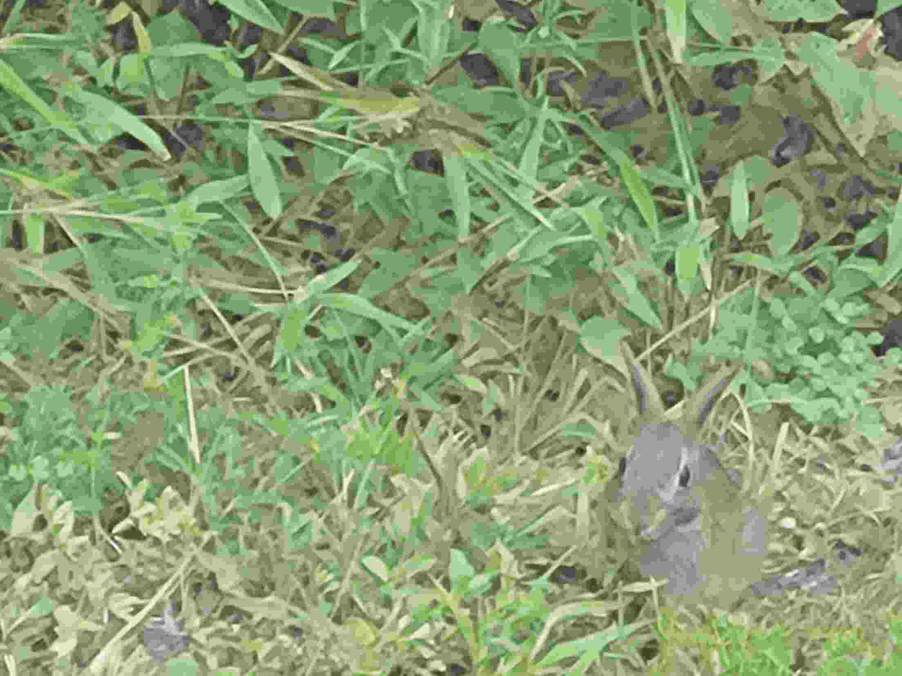
[FILE NAME]: IMG130704_021737.jpg
[FILE CONT]: Baby Bunny
[FILE STAT]: UNEDITED
[FILE NAME]: IMG130704_022356.jpg
[FILE CONT]: Dandelion
[FILE STAT]: UNEDITED
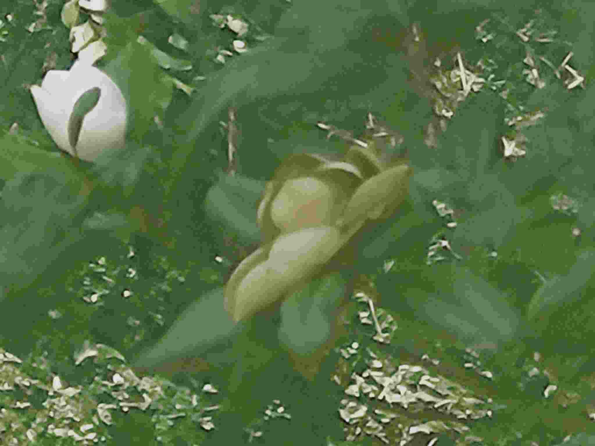
[FILE NAME]: IMG130704_022925.jpg
[FILE CONT]: Dying Magnolia
[FILE STAT]: UNEDITED
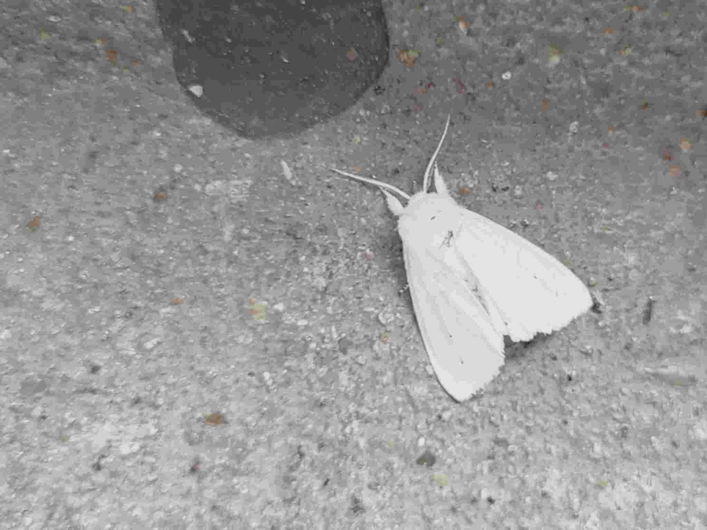
[FILE NAME]: IMG130704_023436.jpg
[FILE CONT]: White Moth
[FILE STAT]: UNEDITED
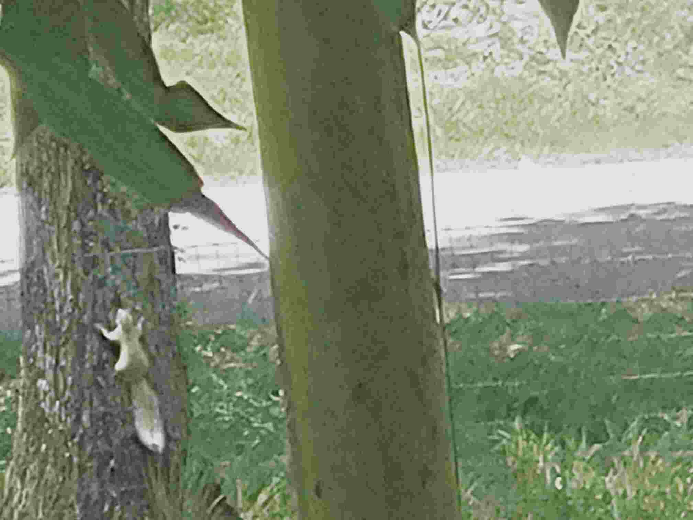
[FILE NAME]: IMG130704_023712.jpg
[FILE CONT]: White Squirrel
[FILE STAT]: UNEDITED
When I got done finding all that was nearby, I walked back to my dad and asked him if my uncle had called at all about when he would be arriving. Basically, I was getting impatient. He said "No, the last thing he does is give a heads up. Plus, you know how he likes to make an entrance"
He was right, I don't think I've ever heard him give a heads up for anything. It was mainly just my impatience starting to ramp up. Still, my dad and I were just standing around having a basic conversation while we were letting the burgers and hot dogs cook. I started staring at the woods, the part we would travel through to get to my uncle's house on the other side. My dad was probably giving me some sort of lesson I wasn't quite listening to as I was dozing off. Still staring at the woods for a good few minutes, just picking up little details like how the grass and leaves weren't really moving that much from such a lack of wind and how the woods were completely covered in staticky brown shade from the dense amount of trees stopping the sun.
As I was looking into the darkness a shape was starting to form, a man practically fell out of the woods. He walked out of the shade in a very rigid walk, almost like he was getting shoved over and over again. He had very fair skin and oddly pale-looking clothes. There was a decent amount of distance from the woods & the house, but he was moving at a weirdly quick pace. The sun was just scorching that day, I honestly could believe I was hallucinating from the heat, but they were still getting closer.
Over time I started making out parts of their face and I could tell it was my uncle. He kept getting closer and the sunlight reflecting off of his skin made him glow and very straining to look at. He was still walking at a decent pace until freezing in an almost instantaneous manner about a 1/4 away from the house. He wasn't really doing anything, just standing there slightly folding downward on his right side, like his arm was heavier than the other while his head was still looking straight towards me. Just staring.
I wasn't really talking much as this was all unfolding so I think my dad decided to look at me and then notice I was staring off into the woods and saw his brother. Just standing there. Out of nowhere my dad shouted "I told so many times not to go through those woods. You're gonna get lost."
My uncle didn't respond like he usually would, his right arm that's slinged up in the air like it was tied to a cloud. It limply started waving back and forth while the hand's palm faced downward and the wrist pointed straight up. I know his jokes we're definitely weird and in odd taste, but this is something I never seen out of him. It honestly started to creep me a little bit. When I couldn't handle it anymore I looked at my dad and he seemed even more confused than I was.
Ever so slightly under his breath, I could hear him say "What the fuck is he doing". He wasn't much of the cursing type which started to worry me a bit more. I asked my dad if he was okay and he just simply said "he must be making a very bold entrance?". The whole time while we were talking he was still just waving, never felt like he was reacting to us. It's almost like he was doing it blankly, without direction. Staring at him for so long it felt like he was right in front of me, his eyes looked relaxed, but his smile looked so.. purposeful? All of this felt so much like him, but it was never the way he would go about it.
I looked back at my dad and asked him if I should maybe go over there and something in that moment just dawned on his face. Whatever relaxed movement was there completely disappeared and a seriousness completely coiled back.
He said something under his breath with every ounce of genuine sincerity I've ever heard out of him. I didn't understand what it was and I asked him to repeat it, but without hesitation he cut me off to say "don't go near it, don't tell the others, don't.. do.. anything. I will be right back. I'm going to call your uncle. Don't go near it, please."
I could tell he tried calmly walking away, but he desperately wanted to sprint inside. I snapped my head back at my uncle, still just waving at me. It felt like there was nothing I could do; clearly, my uncle was not in the right headspace for my dad to be acting that way or maybe it's not even my uncle, just some guy. I trusted my dad's choice and stayed.
This was such a weird moment, but in my mind, I thought it would hopefully end up being a funny memory and I wanted to take a photo of it. I pulled my phone out of my pocket and tried taking a quick snapshot, without really paying attention to the photo I realized later that it was completely blinded by sunlight and his pale skin. Basically making a completely white image.
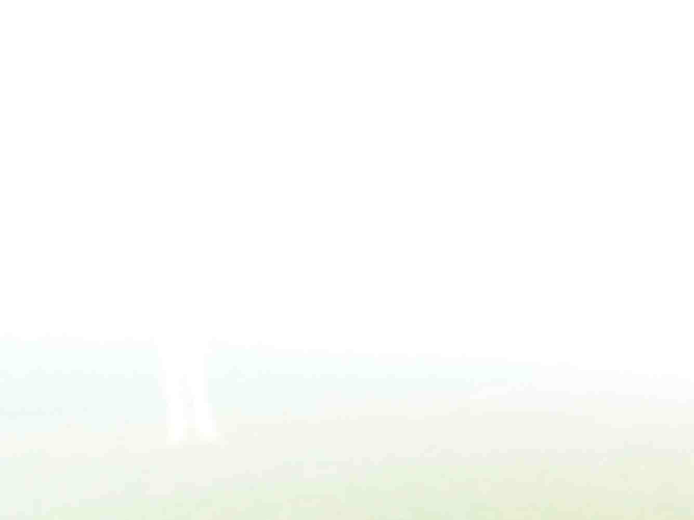
[FILE NAME]: IMG130704_024531.jpg
[FILE CONT]: The Lichtgänger
[FILE STAT]: UNEDITED
He noticed. This whole time he hasn't reacted to us, but this was the moment. Barely a second after the photo was taken his once waving arm was snapped down to his side, slightly pulling him down to the point of leaning sideways. He started taking heavy marches towards me, all of them rigid like a ghost had continued shoving and puppeting him while every muscle in his moving body was constricting to do one job. Move towards me.
He took one step, then two, by three I started getting worried, four steps, five and immediately six. At this point, I screamed for my dad who was still inside that he was moving. He took the seventh step, then nothing.
He froze again. Instead of the jerky shove forward that was happening he was thrown backwards, like a force yanked him down to the ground while somehow falling in an impossibly slow and gentle manner for someone getting pushed. The grass was short at the time, so I could still see his body just lying on the ground. Until his arms hyperextended above his head and gripped into the ground, dragging and pulling his body back into the woods.
It was disgustingly quick the way his arms moved, he was able to cover a few feet in just a few seconds. I couldn't fathom how it had the strength to pull itself that far and immediately.
Then he was gone. He returned to the darkness of the woods, his shape slowly closing off, the glowing off his skin disappeared from the sunlight. That was it.
Still staring off into the woods, I just couldn't. It was like tunnel vision at the time. I can't remember how long I was actually standing there until eventually my dad came back outside.
He walked up back to me and put his arm around my shoulder and guided me inside. Without really looking at me he said "Remember, there will be moments you must be strong when we can't even think straight".
"This is that moment, prepare for anything." I didn't really know what that meant at the time, but I do now. My dad said he was going to drive out somewhere and that I should stay inside and once again, don't tell anyone about what I saw, at least not yet. I agreed, especially since it wasn't really a hard task. After that, I didn't really want to talk that much, still just trying to wrap my head around what I saw.
I walked back inside and just went straight to my room, people were still in the house, but I had no energy to deal with them at the time. I sat in my room practically for the whole night. I felt so blank. Everything felt off. Just sideways in a sense.
This encounter was the last time I saw my uncle, or at least what I would consider my uncle. The next day my dad told me that he died around the morning of the 4th. After some time we got more info, I won't mention what he died from. Too personal. We were told that there was some odd bruising around his body, but ultimately concluded there was no foul play.
So even though I saw my uncle acting weird and ghoulish during the afternoon, he supposedly was dead by morning. Sounded like a ghost. Felt a little too soon and visible to be a ghost, but that's what I assumed. Around a week or so later my dad walks into my room to tell me about something. This is roughly what he said.
"It's time to tell you what happened. I believe it was a Dopplergänger. I never mentioned them to you, but I've heard enough stories of them to trust that they exist. To put it simply, it's a spirit that resembles people who have died, using their bodies to taunt people. I've been told there are multiple kinds with different names, but I know for sure what that thing is."
"Lichtgänger"
"They resemble a person in a very pale manner, they often get closest to people and cause distress during the day."
"I know your uncle would tell you ghost stories and sorts, but this is real.. to me. I didn't think it was time to tell you about this, but I have no reason to hide them now. I'm sorry you saw your uncle that way, but that wasn't him. Truly."
"I wish I had told you to just go inside the moment I saw him."
As I said before, my dad is not the greatest person with his emotions, but I could hear this sadness, or anger, or just something was there. It was cracking through his voice. He started walking out of my room before I could assume he got any more emotional, but then he quickly said.
"If there's anything else, just ask me, okay? Love you."
He closed the door & I just started crying. Everything just hit at that moment, the doppelganger, my uncle, my dad's talk. It felt overwhelming and horrifying. I never even knew my dad believed in supernatural things, he just never seemed like the type of guy. I guess I believe in them too, but it just makes it all the stranger.
It's been a while since all of this happened. I tried to do my research online about doppelgangers, but it feels like our experience was a bit different. I mainly had to talk to other locals to get more info and they were helpful. People get a bit skittish when you mention them, but when you mention that you experienced them, they seem to lighten up about it.
I know my dad thinks it's some sort of bad omen, but I don't know why, I feel kind of glad I saw my uncle one last time. Even though he was acting so strange and belligerent, in that very short window of time I was able to see him where his eyes looked oddly relaxed with that pleasant smile. It was something I never really saw out of him naturally.
It's like I saw a side of him that he never really showed until it was important. Obviously, I don't really know what I'm talking about, it's all complicated feelings stuff. Ultimately I'm kind of comforted even if I was horrified in the moment.
Every now and again I'll see my uncle as a doppelganger again, but this time I've only seen it in corners of dark rooms or other shadowed spaces. It forms more like a figure than a person. Not a big fan of that one. I don't even want to go into that. I haven't told my dad about it yet, but I will soon. Maybe I'll elaborate more when I tell my dad.
Either way, I think I've explained enough of my story. Take care everyone.
This is the editor of the webpage, now it's time for my part of the job. I've provided the entirety of the entry's experience & also the images they sent for me.
It is important to remember that all of these details of what I'm about to explain are all I could find through research & commonly accepted knowledge.
Although people do have their own experiences that can contradict this information, this compilation of experiences is the most unified mythology I can manage. If you have any more info to add or expand upon with your own story, contact me.
I'm going to try to explain the history of the town, the general history of doppelgängers themselves, as well as their classifications which are unique to Waldheim, but also break down what I can of the original entry's story & photos they provided.
For the begin, I'm going to start with the history of the town where the story takes place.
[WALDHEIM, LOUISIANA]:
In the 1840s-1860s, 1000s of German immigrants migrated to America. Around 70,000 had arrived in the south, many that which travel to New Orleans first during 1853-1854. At the time yellow fever was ravaging a toll of bodies, those who survived the rave are who compiled in the German community.
Many in this fleeting group were said to be professionals in their own right, being schooled in medicine, law, music, & art. As well as the average worker like engineers, journalists, blacksmiths, textile manufacturers, piano/organ makers, printers, & many more.
Most of the reasons the educated & common citizen fled their home nation were said to be of political & religious oppression established by the German Empire, or in other words the Kulturkampf.
In which there was extreme persecution of Roman Catholics, but it also caused the evacuation of regular Catholics, Lutherans, & Methodists to find new land with freedom of religion & politics.
Now for the town itself. It was originally called by the name St. Boniface, which was given by a local Reverend, J. Aherns in honor of Saint Boniface (obviously).
Over time, as the German settlers started populating the area of Waldheim. Stories began with scenes of doubles & family being in odd parts of town then later denouncing such a thing. People who spoke of seeing a double of themself quickly grew ill in the later year. Some of them succumbed to yellow fever or tuberculosis, while others succumbed under mysterious circumstances that couldn't be recognized.
Medicine was scarce when I came to fighting illness leading it to the ultimate death sentence. In many cases, once a story was shared about a doppelgänger they would come together & pray away the omen to be saved. In any case, the 2 ways that were identified to protect yourself against such an event are to not interact with the double & to pray for your soul with a church group, when safe to do so.
In the area, a few churches were starting to be erected around the mid 1800s, most notably the Waldheim United Methodist Church in the 1870s. These churches held bilingual ceremonies in both German & English, just to characterize how plentiful the German-speaking population was.
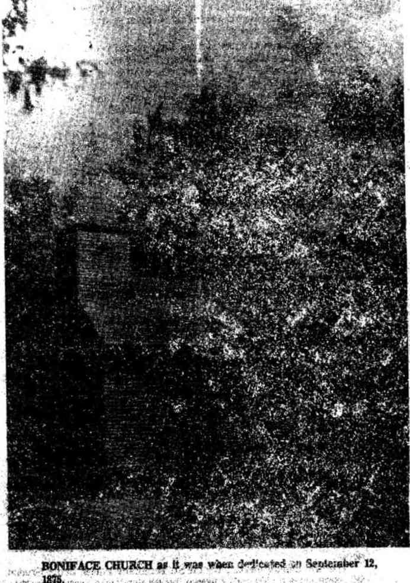
Boniface Church [1875]
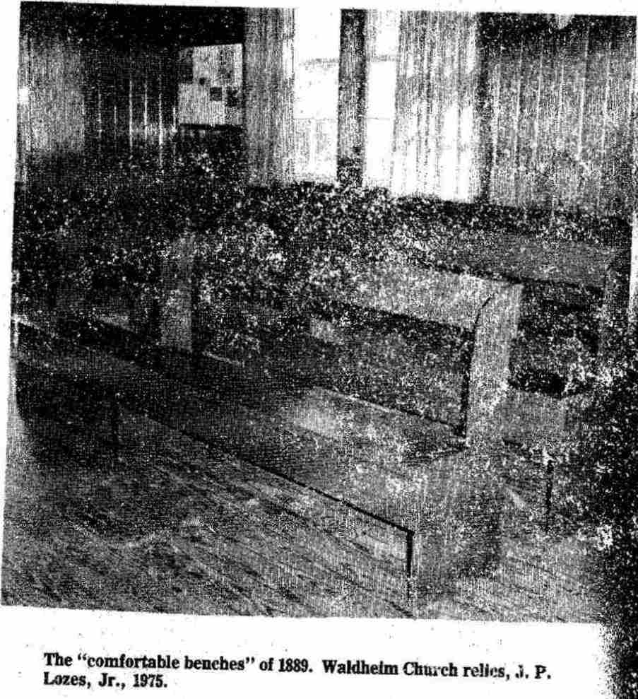
Church Benches [1889]
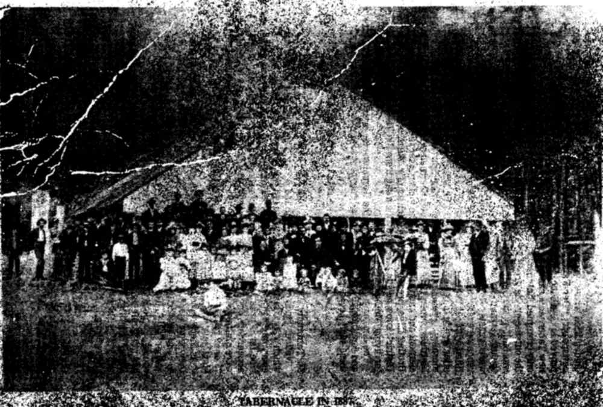
Tabernacle [1887]
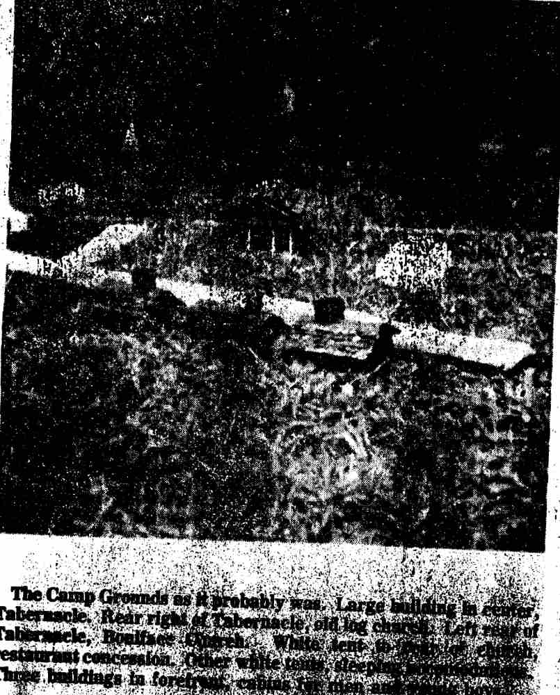
Camp Grounds
Eventually, the land was given its modern name formally by 1907, Waldheim. This is meant to mean "Forest Home" in German.
Most of the German citizens were homesteaders who lived a self-sufficient lifestyle out of necessity & it was said to be a very harsh living. Most lived in log cabins built with the assistance of their neighbors using the trees grown on the very same land, but water was brought from outside wells.
Most chores revolved around consumption. Water drawn from wells for breakfast, butter & watermelon were to be stored in the wells during the summer to stay cool until supper. In the colder months, they would have to heat the water over a wood stove & throw it on the animal's drinking water, just to get full access to hydration.
The meals were bland & meat was said to be scarce. When animals were killed it was only in the coldest parts of the year, so the meat wouldn't spoil. Yet with all the hardships each week, every Sunday the families would go to church. A very important backbone to why this town exists today, religion & belief.
The area was bountiful when it came to lumber, there was a big timber industry in the area as well as in other neighboring towns. Eventually, the resources would start to dry up, but very soon in the early 1900s, the creation of nearby railroads stopped the town from going under. There is said to be more specific information, but so far this is all I have for the timber & railroad portion.
Now we must skip 100 years to modern day, the area has stayed a densely wooded land, quiet, but now a more suburban area. During the 2000s the community had a religious revival due to the happenings of Hurricane Katrina & utilizing efforts of the locals to put the town back together with their bare hands. A very common thing for many small towns affected by the Hurricane.
[It is important to mention that there were, in the general area, Native American Choctaw who lived there first & supposedly coexisted. They will not be mentioned due to their lack of overall involvement. As well as the fact that the folklore that's being discussed is German in lineage, but they are important for future research geographically.]
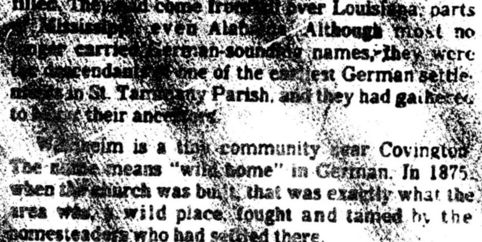
News Snippet
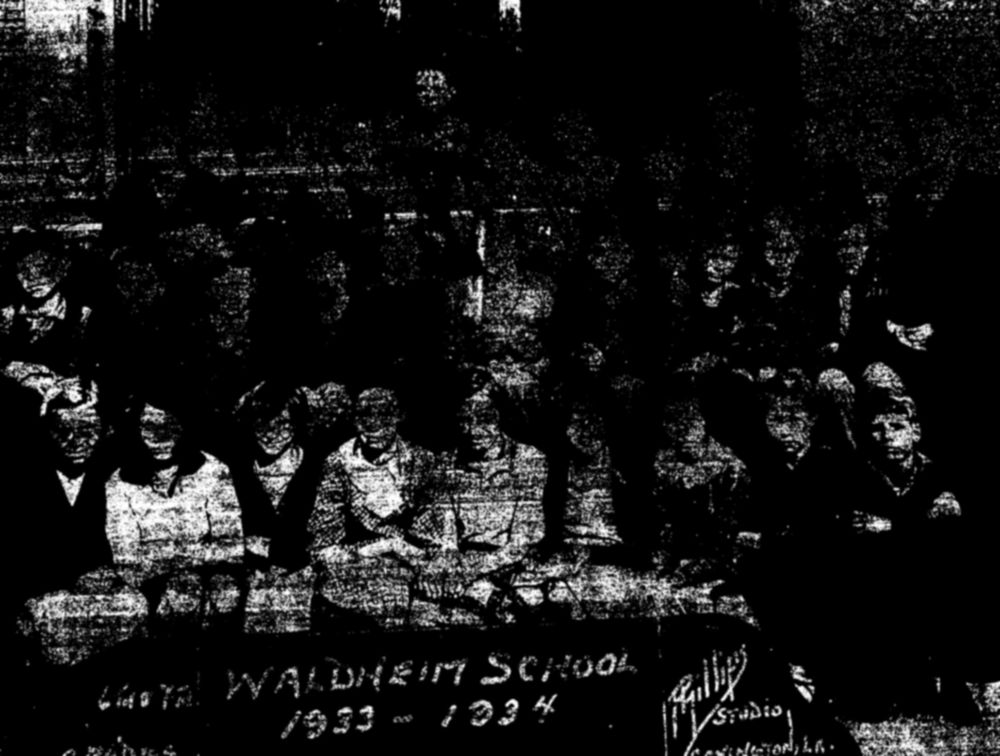
Waldheim School [1933-1934]
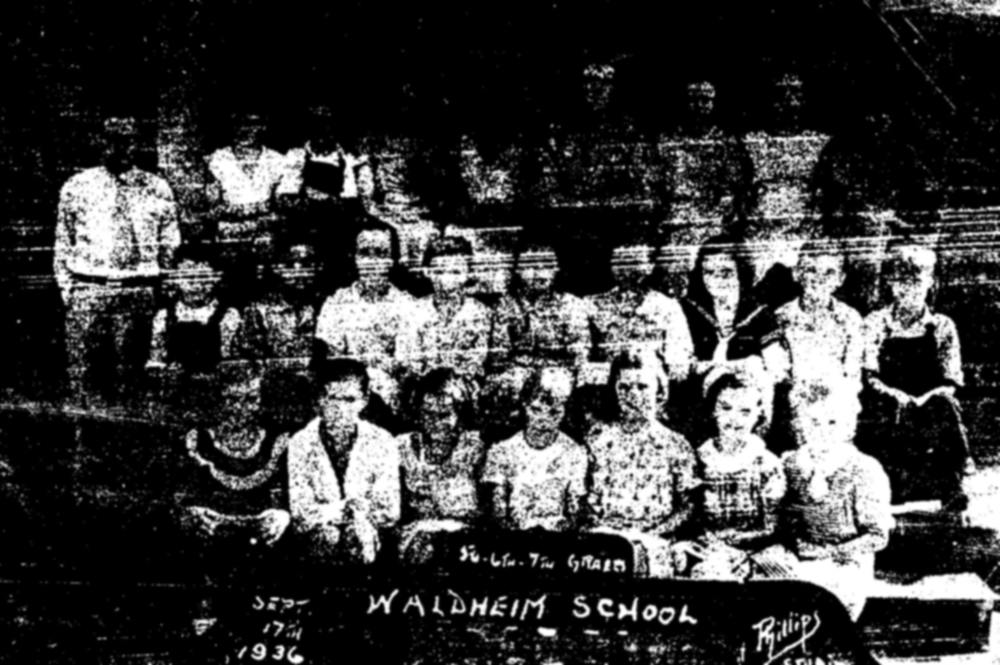
Waldheim School [1936]
[DOPPLERGÄNGER - Lineage]:
This will be a general history over doppelgangers & lightly touching on over folkloric creatures outside of Germany that are in a similar nature to them.
Mainly about one that copies the look of another. Throughout my research, I couldn't find a real historical background or origin of the doppelganger in Germany. The idea of a separate person having the form of another has been used in constant literary works & urban legends.
The first known coining of the term doppelgänger was in a book by Jean Paul, Siebenkäs in 1796. Which means "double walker" in German. Of course, there have been many older examples of the phenomenon, but this is the moment when the most common phrase for them has been made.
From what it seems there's no specific folklore or entangled history of the phenomenon other than off-handed accounts of people's experience & general beliefs across nations with their own specific names & mythological systems.
Of course, there is the German Doppelgänger, which is said to be a "ghostly-double" that represents a bad omen for illness &/or death for the person that is being mimicked. In this case, there must be a living "light" while the spirit is the "reflector." Unlike common ghost mythology where an apparition is the exact spirit of an already established deceased person.
It's also mentioned that they have no shadow or reflections, which is common for many mythological creatures. Specifically, the commonality of the reflection aspect comes from the fact that old mirrors were made of silver which is considered a divine & pure metal in religion. Which might explain the origin of having no reflection & the shadow can come from a ghost being translucent, if you so wish to apply logic to the illogical.
There seems to be a stark lack of online information about specifically the German folklore, which sadly means I'm going to have to cut it short with them. If you have any information or web pages that have extensive research on their history, contact me.
Similarly, there is the Irish Fetch, which seems to be very similar to the doppelgänger as it is said to be an apparition of a living person, the ghost of the living. The name is meant to represent the "fetching" of souls. They are seen as an omen for death, but only if seen in the evening.
If they were encountered in the morning then it is a fortune of good luck, a stark difference compared to the others to have the possibility of positive representation. The Fetch is said to physically or actionably resemble the way that the person is going to die. In a simple scenario if they were bound to die by fire, then The Fetch will have heavily burnt & scarred skin.
It is mentioned that the apparition can be seen by others or by only the person imitating them, it all depends on specific encounters. It's also believed that The Fetch can appear even after someone has died, but only soon after death. They are said to be walking with their past loved ones, keeping their distance from the living until eventually fading away.
The Irish Fetch seems to have more online history such as cases of encounters & proper written history. There is much more to them that I will not be mentioning to continue with other depictions of doppelgangers.
The Scandinavian Vardøger is a spirit that mimics a person's movement, voice, & scent. The name meeting guardsman/watchman combined with spirit/mind. Instead of it being represented as a separate creature, it seems more to be so described as almost a short-term clairvoyant prophecy or a future projection playing out where the spirit copies the exact entrance or action of a person before they actually do. Causing a sort of deja vu.
The Vardøger is also an example of a purely positive version of a doppelganger, it is said that they are completely harmless and considered protective. More so acting as a way to give a subtle warning to worried community members that the person being mimicked is returning from a long journey or a harsh storm. The Vardøger also seems to have a decent amount of written history actually documented online. Once again, I described the basic outline of the mythological functions & will now continue.
Then there is the Egyptian Ka, I will admit their history & breakdown is a bit difficult for me to understand, especially now because of significant involvement of their Gods, so I would highly recommend you do your own personal research on this one since I'm just going to give a general overview & not give the whole picture.
The Ka is said to be the soul or spiritual life force of the individual, they are born with a person & continue to exist after the person dies, which is said to require food offerings for the Ka to continue.
Apparently, it is believed that even though a person is dead, if the Ka continues to exist a person is not actually dead, only their physical representation is gone which is why they require food offerings.
The Ka is seen as the difference that separates a living person from the dead & the aspects of men & Gods connecting with the life force. The Ka are said to look exactly like their people, although they are sometimes depicted as slightly smaller.
The Egyptian God Khnum is said to be a person who builds the physical body & Ka of a person. There is much more extensive history in the case of ritual & cultural significance that I simply am uneducated & do not have the time to elaborate on.
Now for the final doppelganger, the Native American Skinwalker. Instead of what has been a spirit or apparition, Skinwalker is a malevolent witch that takes the skin of animals to possess or transform into those animals. It is always considered a dark art & taboo for discussion.
In fact, it is considered to talk about them, is apparently asking for the skinwalker. In a sense, you're basically egging it on. The skinwalker is deeply intertwined with witchcraft & black magic, often involving animals that represent mischievous icons or tricksters, which in & of themselves are considered a bad omen & a calling for death.
There is of course much more history than this, but what I've explained shows the very stark difference between the usual spirit I've been describing from fellow nations.
What was the point of giving out all these examples? Well, it allows us to get an insight into how doppelgangers are not unnecessarily a unique concept & how they have multiple interpretations & possible ways that encounters can function.
This gives the possibility of more broadly cataloging the types & classifications of the doppelgangers encountered in Waldheim. In a sense, it allows a more educated recalling of a doppelganger experience, due to the possibility that it's not exactly a "German Doppelganger", but perhaps more similar to an Irish Fetch or a Native American Skinwalker.
[TYPES - Classifications]:
To start first we have The Lichtgänger, which was specifically mentioned in the entry's story. The name means "Light-Walker" in German. Specifically, these forms of doppelgängers are said to look much paler than the person they are replicating to the point of slightly glowing or possibly being translucent. They are ultimately considered docile, never actively hurting people.
Then there is The Düstergänger. They often hide in the shadows & are kept very subtly from sight. They resemble a dark or deeply contrasted version of the person they are copying. They seem to have been subtly mentioned at the end of the entry writer's story, but I wasn't given much information on the side of The Düsters.
The last one is the Waldenkurz, or the WoodRunner. I discovered this after asking the entry writer for more information on local creatures. They seem to be similar to the Native American Skinwalker, but otherwise, there's no direct information describing what they are online. The only real justification for calling a creature a Waldenkurz is when the animal has behavior that is instinctually & primitively false to the animal's commonly accepted attributes & disproportionate limbs, than what is commonly associated with their species.
Now beyond this point will be the discussion of very common "presets" that they could perform in. This is more of a general observation & idea of mine in order to break down the type of experience further, possibly a sort of "rating system" that could be used for other future discussions.
The first one is The Roamer, they practically don't do anything. They don't interact with the people that they mimic or the family members they simply just walk among everyone else & are more of a blip in a passing by moment. It's like they're trying to assimilate into a community then actually wanting to cause any purposeful experience on a person. Basically, they mimic with no real goal that involves the person they're copying or their associates.
The Watcher, which is pretty obvious by the title, simply observes from a distance. Not really getting close or necessarily forcing their presence to be known, they're more "personally" engaged than a Roamer would be, but they never seem to go much further than studying the surroundings or the reactions of a person they're mimicking or their community.
Then The Invader, a doppelganger that actively breaks into the environment & is willing to get much closer to other people. They don't seem to be violent at all & merely just try to assimilate, blending in with their surroundings, but in a much more immediate proximity with a person.
Lastly, there is The Killer, this one is very obvious & considerably one of the more terrifying options, which is that they are extremely violent & do not care about being close & forcefully doing whatever they wish. I can be kind of glad that I haven't heard of any cases that resulted in death in Waldheim, but who knows? History is only written by those who live.
[ENTRY#1 - Research]:
After doing all the research & reviewing their story, I'd assume what they experience is a Watcher Doppelgänger, specifically the one that they mentioned, the Lichtgänger. The described brightness coming off of the figure & the photo provided with it reflects seems to be pretty likely that the legend is connected to his experience.
On a casual viewing, there wasn't really much to break down in terms of their story, other than 2 big key factors. One of them was the jerky movements that were described of the doppelgänger, which in my research has never been a key aspect described in any of the doppelgänger experiences.
They didn't necessarily mention if that was a common thing with Lichtgängers or not. So it seems that might have just been a 1 off occurrence, but I do find it important to try to think about & find connections later on.
The 2nd, & arguably the most important factor, is the photo of the Lichtgänger. As they mentioned the photo got blinded by the sun & the glowing nature of the doppelganger. That fact is very visible when reviewing the photo that they provided. It's almost impossible to see anything, but I went ahead & edited the photo as much as I could to get any viable information out of it.
After doing multiple different edits like bumping up the saturation & making edges more sharp & rigid, you're able to make out a blinding, completely white silhouette of a person. In order to make it more comfortable on the eyes, I inverted the image so all of the brightest pixels become the darkest pixel, plus I added a cyan border around the Lichtgänger, just in case it was hard to notice on the somewhat black background.
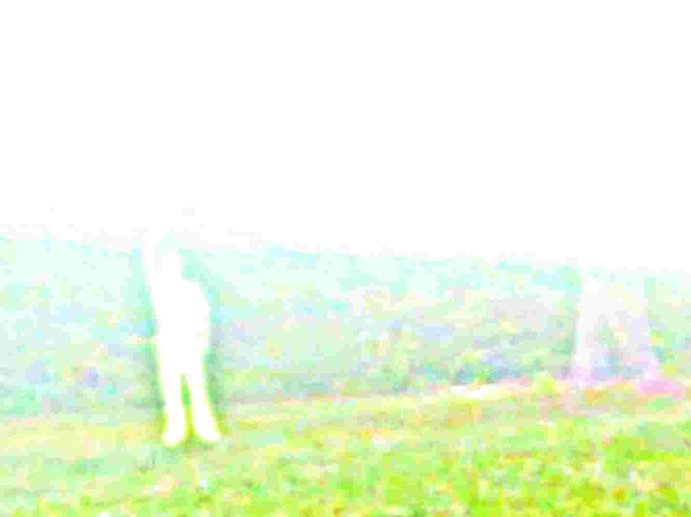
[FILE NAME]: DopplergängerEditedPhoto.jpg
[FILE CONT]: Dopplergänger Of Entry's Uncle
[FILE STAT]: EDITED FOR ENHANCEMENT
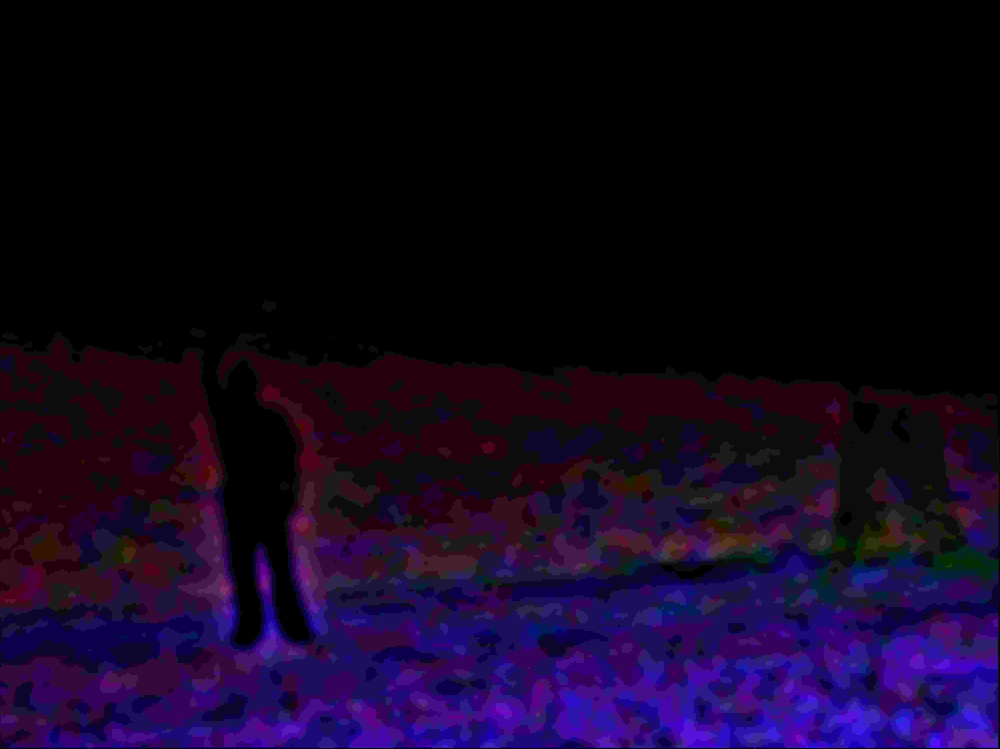
[FILE NAME]: DopplergängerEditedPhoto2.jpg
[FILE CONT]: Dopplergänger Of Entry's Uncle (Inverted)
[FILE STAT]: EDITED FOR ENHANCEMENT
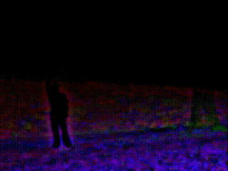
[FILE NAME]: DopplergängerEditedPhotoGIF.gif
[FILE CONT]: Dopplergänger Of Entry's Uncle (Boxed)
[FILE STAT]: EDITED FOR ENHANCEMENT
Nothing is particularly notable other than what is obviously visible. You can clearly see a figure of a humanoid standing in a field. A tree on the right & the figure on the left, their arm raised in the sky which gets cut off by the sheer brightness of the flare.
[THEORIES - Analysis]:
Now it is very important to know that this is highly speculative & is being built off a very limited view of what knowledge is available for Waldheim's folklore.
All of the "factual" details about the doppelgänger case were told from the entry, which means some of the information is heavily opinionated based on the entry's experience, personal beliefs, & what their dad told them.
[Physical Or Meta?]:
Probably one of the most important questions is what kind of doppelganger are we dealing with? In standard mythology the doppelganger is a spirit & a spirit is something you can't usually physically interact with due to it being beyond the veil of the physical world.
In more modern renditions of the doppelganger, they're no longer considered spirits & more so chameleons or skinwalkers. More so physical beings that are able to change their appearance to mimic others around them.
So in this case we have to deduce if this encounter & subsequently if the doppelgänger of Waldheim is the modern or classic depiction, physical or spiritual.
My personal theory is that it is a spiritual doppelganger, which even then is a pretty hard accusation to prove definitively. So far there are only 2 prime factors that are proving my hypothesis, the 1st is when it's mentioned that the figure at some point, was randomly thrown backwards & it falls in an oddly slow manner. A physical being is constrained by the laws of gravity &/or would need insane core strength to act out the gentle falling motion, that's not even mentioning that it would imply that a reason was consciously thought of to be performed.
The 2nd is the pale visual of the skin on the figure. It is common in descriptive tropes that spirits are usually transparent in some way. In the entry, they're never described as translucent, but I think the pale skin might be covering up that fact. It is said that the sun was heavily reflecting off the figure, which made it hard to look at. It could be possible that the spirit was translucent, but the sheer mass of flaring off of the form caused it to be impossible to see the low level of opacity.
It could also be equally viable to consider that in order for something to properly reflect, it would have to be physically interacting with light. So if it was slightly translucent light would be lost causing it to be dimmer in appearance, but circles can be made around this argument & assumption.
Personally, as stated, I believe it is a spiritual doppelgänger. Which means it is of classic German folklore, but it does seem equally possible to be the more modern depiction of the physical variety.
[How Do They Work?]:
The primary function seems to be simply a harbinger of death or sickness, but an important aspect is that a classic doppelgänger copies the person who is going to die & it becomes a sort of warning for the person.
In the entry, the uncle is already dead. Said to have been deceased since the morning & the doppelganger event happened in the late afternoon. If that is so, then what is the point of copying? How do we know that this is even a doppelgänger & not just a spirit?
Well, honestly one of the only ways to say that it's a doppelganger without adding a respiratorial aspect is that there have been other encounters with doppelgangers full-on mimicry & wall town that was mentioned by the entry. Of course, we haven't heard of those cases yet, but the fact of it being mentioned that there are other examples makes it more comfortable to assume this is a doppelganger spirit.
It is also important to remember that in Waldheim they have their own specific versions, most notably the Lichtgänger, which is said to be what they encountered. Now this is where the conspiracy starts to come into play. Perhaps instead of the doppelganger being an omen of death for the person they're copying, it's a warning that death has already arrived for members of the family.
Acting as a of sort message that they're gone & allowing a final look at their living form, while still keeping the main principle of being this harbor of death while still matching the happenings of this event. It is valuable to mention that in the entry, the writer's father mentions that the Lichtgänger is causing distress by doing it. It could imply that the distress is purposeful or just a general, emotional effect caused by the mimicry. Either way, there's not much to speculate on in that regard.
A user named "Catz&DogzRMyFrend" suggested a theory that the corpse of the uncle was being puppeteered by some sort of other spirit before getting dragged back into the house. Which explains the discovery of odd bruises on the body, the forceful movements, & the paleness of the skin. Especially when it's mentioned that the figure was never described as translucent, a normal spirit trope, but only pale & highly reflective. This can be caused by the sun being so bright, that the white skin becomes hard to look at.
Let's not forget the other type, the Düstergänger. With them, there's almost no real evaluation on them, though it seems that they are more likely to cause stress upon people especially because of them appearing after the fact of death. Being a fake spirit in a grieving family's corner while resembling the corpse of a lost one doesn't really put them at ease
So I would safely say that the Düsted is more of a malicious mimic, purposefully making itself a darker version of the person they lost. Although a user by the name "MelonMan312" had an interesting assumption. They suggest that possibly these sorts of doppelgängers copy already established past figures to feel the compassion of being remembered & grieved over. Whether it be because they have been forgotten over time or were never grieved over in the first place. Ultimately that idea to me makes them very sympathetic & possibly a not so malicious character. I can't really blame doing such a thing if I were a conscious spirit roaming the earth for 100s of years & no one had thought of me or even talked to me, I'd probably get pretty desperate too.
[What Are The Origins?]:
For this idea, there is not a single ounce of proof other than the ancestral origins of Waldheim, but I think it's a pretty interesting idea. Perhaps the reason why the town has doppelgängers is that all that time ago when Germans were migrating to America, the spirits boarded whatever boat they were hauling over to. Now populating the American wilderness with spirits from a whole other land. Once again no real way to prove this.
This wasn't elaborated on, but there seems to have been some subtle hinting that a Waldenkurz can be much more than an animal, but more specifically can resemble a pet or even sentimental items that, over time, disappear without a trace. Whether it is a witch wearing the skin of an animal like the Native American Skinwalker or a spirit mimicking the physical appearance of an animal like a Dopplergänger.
As I mentioned, the meaning behind why they would do that or if it is a widely accepted idea in the town's folklore is not present. In fact, I don't even know if they would be considered that happen a Waldenkurz or if it would be under a completely different name entirely. I'd assume they should have a different name since the term specifically relates to animals. Maybe I'll try to give it some other name so it doesn't get too confusing?
Still, I have a fairly simple theory, which is that items get mimicked specifically to invade homes & stay over longer periods of time. No evidence, just spooky fun.
[ENDCARD]:
Hopefully someone in the future contacts me with another story of theirs so I can get more information to catalog & properly distribute. Once again if you have any more information about this specific kind of doppelgänger or your own personal experience in your local area, contact me.
I think that's all I can discuss at the moment, I hope you enjoyed the story I've provided & my analytical breakdown of all I could. Hopefully, I'll have some sort of forum so people can just put down their own stories & theories right on the website, until then this is good enough.